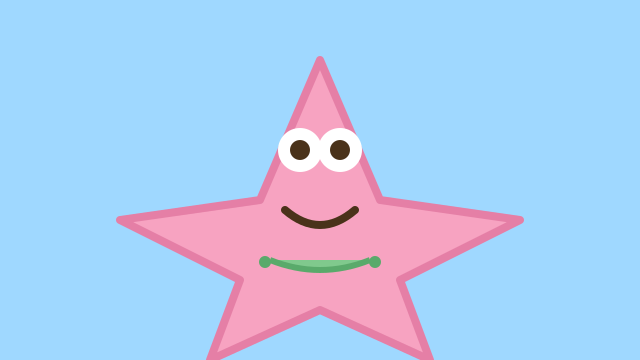

Patrick wisdom
Patrick reminds me that sometimes the simplest question reveals the most. Whether it is physics or code, pausing to ask “why” can shake loose a better path.
We can even give him a scaling law: a starfish’s area-to-volume ratio shrinks as it grows, but Patrick’s curiosity seems to scale the other way.
\( \frac{A}{V} \propto \frac{1}{r} \)